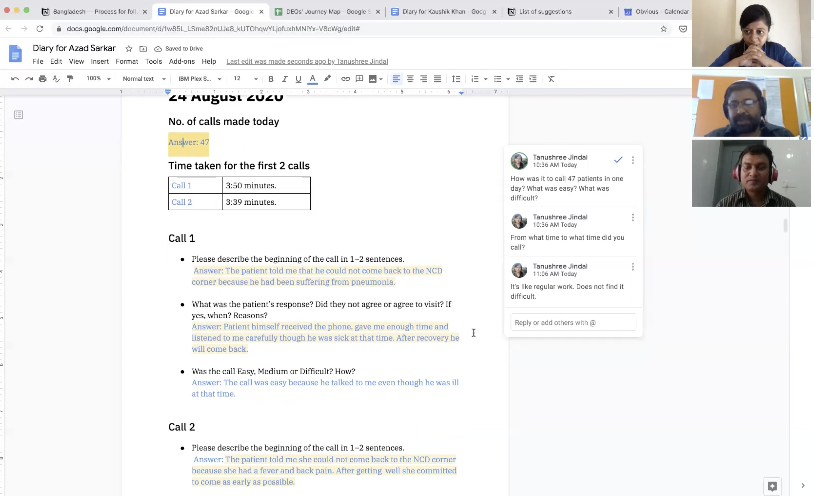

Improving the process of making reminder calls to patients
How might we improve the percentage of patients with hypertension who return for their follow-up visit? This is the larger challenge that the team is designing a solution for.
Hypertension is a long-term condition that requires patients to return for check-up on a regular basis. Getting patients to return to care is a key area of focus for national hypertension control programs in India and Bangladesh. One way that this is achieved is through making reminder calls to patients.
The team at Obvious, Resolve to Save Lives and National Heart Foundation Bangladesh was working with the goal to optimize this process — how can calling patients be made more effective and successful? To kick things off, we started with foundational research to understand the current process of calling patients.
This study was the first in a series. My role was of a user researcher who led the study. Here, I’ll take you through the process and the outcomes:
Plan
Objectives
Step one, as in all studies, is to define the objectives. This needs to be done as a team.
Our objectives were to:
- Understand the staff’s process of calling patients.
- Learn about their experience and the pain points.
- Learn about the patients’ responses.
For each of these objectives, we identified our research questions.
Participants
The participants for the study were staff members at the National Heart Foundation Bangladesh who call patients as part of their job. The study was conducted with 5 participants.
National Heart Foundation was also a partner and stakeholder in this project.
Methods
We chose the methods of a diary study along with in-depth interviews. These would help us get deeper and more accurate insights for our objectives. Note that in-person studies were not possible due to the COVID-19 pandemic.
While designing the study, it was important to keep in mind the participants’ comfort level with digital tools and with English. I chose Google Docs as our tool for the study — the participants were familiar with it and it required no onboarding for them. The instructions were worded in simple and friendly English.
Writing the plan
I wrote the plan and shared it with the team. It included the project timeline, objectives, interview guide and supporting resources.
The shared plan document additionally acted as a place where members collaborate and align.
Conduct
Diary study
The study started with a video call to brief the participants. The participants learned about the purpose of the study, and tested working with their online diaries. I asked each of them simple contextual questions -- with the goal of ensuring that each of them felt involved in the week-long study.
As the diary study started, I stayed in contact through email. We had a mid-week video call for a check-in. The study proceeded smoothly, and participants were engaged through the process.
In-depth remote interviews
At the end of the week, I conducted in-depth interviews. This was the time to learn deeply about the participants' experiences.
The interviews had three main sections:
- Understand their end-to-end process of calling
- Clarify and probe deeper into the responses in the diaries
- Generate ideas for improvement with the participants
As I interviewed them about their process, I shared my screen with the participant and took notes on an empty journey map. This helped the participants feel more heard and engaged in the study. I have found it fascinating how remote interviews present unique affordances that help enhance the rapport and connection between the interviewer and interviewee.
Synthesize
At the synthesis stage, notes from the diary study and interviews were reviewed and tagged. They were then moved to digital post-its on Figma, and organised into groups. Post-its with similar points were further clustered together. Through this process of affinity diagramming, key patterns of the findings emerged.
We learned how the staff members make calls to patients. At what time of the day, at what location, and the tools that they use. We learned about how the message is worded. We learned about the behaviours and responses of patients in rural Bangladesh. We learned what is an easy call. We learned the various common challenges that are faced while making calls to patients.

Outcomes
This study created a clear, shared understanding in the team of the process of calling.
Improvements were implemented at various levels. There were new features and improvements made to the
Simple app -- which would ease the process of calling for all healthcare workers who use the app across
various countries.
We created a Standard Operating Procedure -- a set of best practices on how to make effective and successful phone calls. We improved on it on further feedback from the staff who regularly make phone calls.
Participating in the diary study and the interviews enthused the staff. The process helped them identify opportunities to improve their process and they put them into practice.
This made for a great start to the project where the goal was to create systems and processes for calling patients effectively and successfully. The team would implement the improvements -- and then run another study.
Thanks to Pragati Mehrotra (Obvious), Daniel Burka, Dr. Reena Gupta, Meg Farrell, Shamim , Azad, Rakib -- for their key contributions to the study.